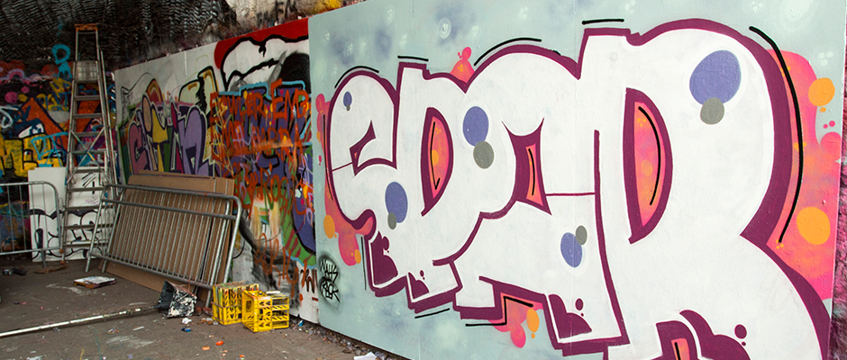
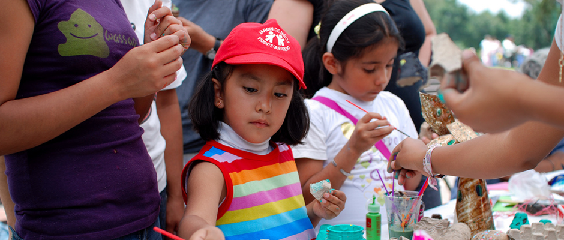

Art Start nurtures the voices, hearts and minds of New York City's marginalized youth for the purpose of personal development through consistent, creative workshops inside homeless shelters, alternative to incarceration programs, and partnering youth agencies.

Over the past twenty years, Art Start has become an award-winning, nationally recognized model for using the creative arts to transform young, at-risk lives. Art Start kids live in city shelters, on the streets, are involved in court cases, or surviving with parents in crisis. Through Art Start's daily creative arts workshops taking place inside some of the city's loneliest places, at-risk youth collaborate with local teaching artists and educators who donate their time and guidance to nurture the youth's creativity and talents.... Click HERE to read more.
Over the past twenty years, Art Start has become an award-winning, nationally recognized model for using the creative arts to transform young, at-risk lives. Art Start kids live in city shelters, on the streets, are involved in court cases, or surviving with parents in crisis. Through Art Start's daily creative arts workshops taking place inside some of the city's loneliest places, at-risk youth collaborate with local teaching artists and educators who donate their time and guidance to nurture the youth's creativity and talents.